力量训练 · 阅读版
训练计划与动作教学 按训练日查看安排，点击动作名称跳转到完整教学。
此无脚本阅读模式只展示原Jsen四日参考安排与28项教学，不是新用户的个人推荐。个人建档、计划生成与记录需使用支持脚本的浏览器。
周一 · 上肢力量 A 周二 · 下肢力量 A 周四 · 上肢力量 B 周六 · 下肢力量 B 动作目录 恢复与复盘 Pull-up / 背部
引体向上 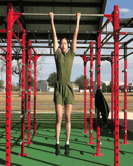
引体向上 · 连续动作 · 12帧/秒 · 来源：Symira Bostic / DVIDS（公有领域） 稳住身体，肘向下拉，缓慢落回。
背阔肌、肘屈肌；提升垂直拉力。
本动作怎么安排 周一 · 上肢力量 A 4 × 6–8
组间休息 · 2–3分钟起，未恢复时可延长
重量 / 难度 · 以余力和动作质量判断。若第6次已很勉强、不确定还能标准完成下一次，就不要为了凑8次继续借力；可减少次数、延长休息或增加辅助。
01 / 准备姿势 选择肩宽或略宽且舒适的正握；拇指环握，双腿微屈或交叠，收紧腹部避免摆动。
02 / 一次完整动作 从受控悬垂开始，肩胛与手肘协调运动，不必刻意分成先肩胛、后手臂两段。 肘向身体两侧下方移动，把身体拉高；不靠伸脖子把下巴硬凑过杆。 在舒适活动范围内下降约2秒，手肘逐渐伸直，允许肩胛自然上转。 03 / 呼吸与核心 上拉时呼气，下降时吸气；保持腹部张力。
04 / 常见错误 → 调整 摆腿借力 → 减少次数，必要时使用辅助器械。
缩短回程 → 降低难度，恢复受控且无痛的活动范围。
05 / 每组完成自检 身体没有持续前后摆动，最后一次也不靠蹬腿。 上拉与下降的活动范围大致一致，不用伸脖子补高度。 最后几次可以变慢，但仍能主动控制下降。 06 / 难度调整与进步 做不稳时 · 次数不足时，用辅助引体器械降低难度；先保留完整、受控的回程。
稳定之后 · 先让各组在相同标准下稳定完成目标次数，再减少辅助或考虑小幅负重。
个人应用 · 原计划4×6–8。手臂参与正常，酸胀位置不能单独判断背部是否参与。
↑ 返回动作目录 Chest-supported Row / 背部
胸托划船 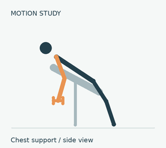
胸托划船 · 12帧/秒 · 原创连续示意动画（简化关节轨迹，非真人录像） 胸贴垫，肘向后，回程不甩。
背阔肌、上背及肘屈肌；减少躯干借力。
本动作怎么安排 周一 · 上肢力量 A 3 × 6–8
组间休息 · 1–2分钟起，以动作稳定为准
重量 / 难度 · 用热身逐级确认当天工作重量；按目标次数完成后，通常还应能以同样姿势再做约2–3次。
01 / 准备姿势 哑铃版本将斜凳调到胸部能稳定承托的角度，双脚踩稳，哑铃下垂时不触地；器械版本调好胸垫与座高。两种版本都保持手腕与前臂对齐。
02 / 一次完整动作 让手肘向后移动，肩胛随拉动自然靠近，胸部始终贴垫。 拉到上臂与躯干大致齐平或舒适位置，停顿半秒，不强行把肘送得很远。 控制放回，让肩胛自然前伸；胸廓不塌陷，也不把肩胛全程锁死。 04 / 常见错误 → 调整 抬胸离垫 → 降低重量并重新调整靠垫。
手腕勾起 → 保持手腕稳定，用肘引导方向。
05 / 每组完成自检 胸部保持接触靠垫，不在拉到顶端时抬起。 手腕没有勾起，左右手拉动基本同步。 回程能放慢，重量没有突然掉落。 06 / 难度调整与进步 做不稳时 · 先减重；器械靠垫应支持胸部且不妨碍呼吸，斜凳哑铃版本也要保证双脚稳定。
稳定之后 · 先增加受控次数，再使用器械或哑铃的最小重量增量。
个人应用 · 原计划3×6–8；器械与哑铃版本都可，按实际设备调整。
↑ 返回动作目录 Lat Pulldown / 背部
高位下拉 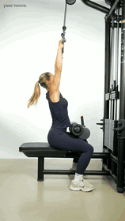
高位下拉 · 12帧/秒 · 真人连续动作 · Your Move（免费视频授权） 大腿固定，肘向下，缓慢回放。
背阔肌与肘屈肌；垂直拉力。
本动作怎么安排 周一 · 上肢力量 A 3 × 8–10
组间休息 · 1–2分钟起，以动作稳定为准
重量 / 难度 · 用热身逐级确认当天工作重量；按目标次数完成后，通常还应能以同样姿势再做约2–3次。
01 / 准备姿势 压腿垫固定大腿，脚踩地；握距选择舒适位置，躯干仅轻微后倾。
02 / 一次完整动作 肩胛与手肘协调下拉，杠向上胸靠近；不做颈后下拉。 保持躯干角度基本不变，到舒适底部停顿，不强拉到胸口。 控制回程，手臂向上伸展，允许肩胛自然上转，不让配重撞落。 04 / 常见错误 → 调整 大幅后仰甩重量 → 减重，固定躯干角度。
回程突然松手 → 保持握持并慢慢放回。
05 / 每组完成自检 下拉前后躯干角度基本稳定，不靠大幅后仰。 回程可受控伸展手臂，配重没有撞落。 肩肘在舒适范围内协调运动，不强拉杠碰胸。 06 / 难度调整与进步 做不稳时 · 减轻配重，重新固定大腿；握距先选肩部舒适的位置。
稳定之后 · 先把每组8–10次做稳，再增加最小配重；更重不应换来更大的后仰。
个人应用 · 原计划3×8–10。既往80kg记录不能代表当前工作重量，不预填重量。
↑ 返回动作目录 Incline Dumbbell Press / 胸部
上斜哑铃推胸 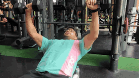
上斜哑铃推胸 · 12帧/秒 · 真人连续动作 · Goulart / wger · CC BY-SA 4.0 脚踩稳，肘在手下，斜向上推。
胸肌、三角肌前束和肱三头肌。
本动作怎么安排 周一 · 上肢力量 A 3 × 8–10
组间休息 · 1–2分钟起，以动作稳定为准
重量 / 难度 · 用热身逐级确认当天工作重量；按目标次数完成后，通常还应能以同样姿势再做约2–3次。
01 / 准备姿势 本手册选用哑铃版本；靠背约15–30°，脚踩稳，肩胛有稳定支撑，哑铃放在胸侧。
02 / 一次完整动作 手腕大致在肘上方，肘与躯干约30–60°，控制下降。 下放到肩部舒适且前臂能稳定承重的位置，不强求哑铃低于胸口。 向上推至手臂接近伸直，哑铃不相撞，肩膀不向前顶。 03 / 呼吸与核心 下降吸气，推起呼气；腹部收紧。
04 / 常见错误 → 调整 靠背过陡 → 调低角度，减少肩前侧主导。
为深度牺牲肩稳定 → 缩小幅度并减重。
05 / 每组完成自检 左右哑铃轨迹基本同步，手腕没有明显后折。 下放末端肩部仍有稳定支撑。 推起时臀部留在凳上，哑铃不相撞。 06 / 难度调整与进步 做不稳时 · 降低重量或缩小无痛下放幅度；先用轻哑铃熟悉安全起坐和收尾。
稳定之后 · 在相同凳角、握法与幅度下先完成次数上限，再用最小哑铃增量。
个人应用 · 原计划3×8–10；如原日程使用器械上斜推胸，以器械设置为准。
↑ 返回动作目录 Lateral Raise / 肩部
侧平举 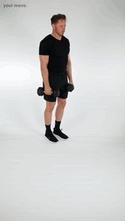
侧平举 · 12帧/秒 · 真人连续动作 · Your Move（免费视频授权） 肘带动，向外上方抬，不甩。
三角肌中束；肩部外展力量。
本动作怎么安排 周一 · 上肢力量 A 3 × 12–15
组间休息 · 1–2分钟起，以动作稳定为准
重量 / 难度 · 用热身逐级确认当天工作重量；按目标次数完成后，通常还应能以同样姿势再做约2–3次。
01 / 准备姿势 双脚站稳，肘微屈；手臂在身体两侧略偏前的位置，握持自然，不刻意倒水。
02 / 一次完整动作 肘引导向两侧抬，手与肘大致同步。 抬到接近肩高或无痛范围即可，躯干不侧摆。 用约2秒放下，避免哑铃靠惯性反弹。 04 / 常见错误 → 调整 甩动、蹬腿 → 减重，必要时坐姿完成。
强行手腕翻下 → 改成自然握姿，不追求倒水动作。
05 / 每组完成自检 抬起时躯干不侧摆、不用蹬腿。 肘角大致稳定，不变成屈肘拉起。 下放能控制，头颈没有跟着前伸。 06 / 难度调整与进步 做不稳时 · 换轻哑铃，必要时改坐姿；抬举高度按无痛且可控制的范围。
稳定之后 · 先稳定完成12–15次；重量跳档较大时，优先保持动作和回程控制。
个人应用 · 原计划3×12–15。肩胛自然运动，避免用“肩膀全程压低”限制它。
↑ 返回动作目录 Dumbbell Curl / 手臂
哑铃弯举 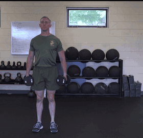
哑铃弯举 · 12帧/秒 · 真人连续动作 · Matthew Holfinger / DVIDS（公有领域） 肘位稳定，弯起不摆，落下不掉。
肱二头肌及其他肘屈肌。
本动作怎么安排 周一 · 上肢力量 A 2 × 10–12
组间休息 · 1–2分钟起，以动作稳定为准
重量 / 难度 · 用热身逐级确认当天工作重量；按目标次数完成后，通常还应能以同样姿势再做约2–3次。
01 / 准备姿势 站稳，膝微屈，手臂垂在身体两侧，手腕与前臂对齐。
02 / 一次完整动作 保持上臂大致稳定，屈肘把哑铃举起，手掌可自然转向上。 在肘部舒适范围内到顶，不用腰后仰帮忙。 缓慢放下，肘逐渐伸直，不用惯性反弹。 04 / 常见错误 → 调整 躯干后仰 → 减重或靠墙站。
手腕弯折 → 改轻重量或舒适的锤式握法。
05 / 每组完成自检 肘部没有随着每次弯举大幅前移。 腰背不后仰，膝部不反复蹬伸借力。 手腕与前臂对齐，下降没有突然掉落。 06 / 难度调整与进步 做不稳时 · 减少重量；可以靠墙减少摆动。锤式握法只在实际无痛时作为可选版本。
稳定之后 · 先增加标准次数；加重量后如果明显摆腰，就回到原重量。
个人应用 · 原计划2×10–12；手腕不适时只选无痛握法与幅度。
↑ 返回动作目录 Barbell Back Squat / 腿臀
杠铃深蹲 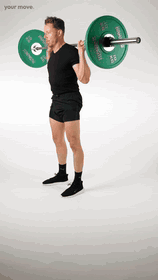
杠铃深蹲 · 连续动作 · 12帧/秒 · 来源：Your Move（免费视频授权） 脚踩稳，撑住躯干，髋膝一起下。
股四头肌、臀肌与躯干稳定。
本动作怎么安排 周二 · 下肢力量 A 4 × 4–6
组间休息 · 2–3分钟起，未恢复时可延长
重量 / 难度 · 用热身逐级确认当天工作重量；按目标次数完成后，通常还应能以同样姿势再做约2–3次。
01 / 准备姿势 设置安全杆；杠铃放在上背肌肉承托处，不直接压颈部。站距与脚尖外展按髋部舒适度调整，足跟、前脚掌内外侧均有支撑。
02 / 一次完整动作 吸气并让腹部周围撑紧；髋膝协调屈曲下蹲，重心大致在全脚掌。 膝盖大致跟随脚尖，允许自然前移；下到能够维持平衡和躯干控制的深度。 推地站起，让髋与肩一起上升，避免先抬臀再用腰顶。 03 / 呼吸与核心 每次下蹲前吸气建立腹压，保持躯干张力，过困难段后呼气；不要跨多次重复持续憋气。
04 / 常见错误 → 调整 足跟抬起 → 检查站距、活动度和重量，必要时用举重鞋。
膝内扣或躯干塌陷 → 减重，重新控制轨迹。
05 / 每组完成自检 全脚掌有稳定支撑，足跟不在底部抬起。 膝盖大致顺着脚尖方向，躯干没有突然塌陷。 起身时肩与髋协调上升，不先抬臀再顶腰。 06 / 难度调整与进步 做不稳时 · 减轻重量或暂时减少深度；先用徒手或轻杠确认平衡、安全杆与起身路线。
稳定之后 · 保持相同站位与可控深度；各工作组达到目标且保留余力后，再考虑最小重量增量。
个人应用 · 原计划4×4–6。使用安全杆或可靠保护，不测试极限重量。膝盖超过脚尖本身不等于错误。
↑ 返回动作目录 Romanian Deadlift · RDL / 腿臀
罗马尼亚硬拉 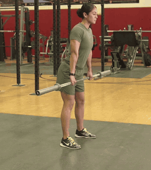
罗马尼亚硬拉 · 连续动作 · 12帧/秒 · 来源：Amber Jennings / DVIDS（公有领域） 微屈膝，髋后移，杠贴腿。
腘绳肌、臀肌；髋铰链能力。
本动作怎么安排 周二 · 下肢力量 A 3 × 6–8
组间休息 · 2–3分钟起，未恢复时可延长
重量 / 难度 · 用热身逐级确认当天工作重量；按目标次数完成后，通常还应能以同样姿势再做约2–3次。
01 / 准备姿势 从站立持杠开始，脚约髋宽；膝微屈，杠在大腿前，肩部与背部保持张力。
02 / 一次完整动作 保持膝屈角度大致稳定，臀部向后移，杠沿腿前下降。 到腿后侧有明显拉伸且背部仍可控制的位置即停，不要求杠碰地。 脚踩地、髋向前伸展站起；顶部站直即可，不向后折腰。 03 / 呼吸与核心 下降前吸气撑紧躯干，起身过困难段后呼气。
04 / 常见错误 → 调整 越降越蹲 → 减少膝屈，把髋向后送。
为触地弯腰 → 提高最低位置，保留后侧张力。
05 / 每组完成自检 臀部向后移动，膝角基本稳定，不越来越像深蹲。 杠与腿保持接近，最低点不靠弯腰获得。 顶部站直即可，不向后折腰。 06 / 难度调整与进步 做不稳时 · 用轻杠或哑铃练习髋后移；最低点以背部稳定和腿后侧张力为界。
稳定之后 · 先稳定最低位置与回程，再增加次数或重量；不要靠更低触地来证明进步。
个人应用 · 原计划3×6–8。训练感受可辅助调整，但不以酸痛作为效果标准。
↑ 返回动作目录 Leg Press / 腿臀
腿举 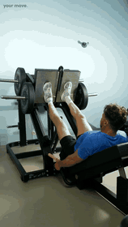
腿举 · 12帧/秒 · 真人连续动作 · Your Move（免费视频授权） 骨盆贴垫，控深度，平稳推。
股四头肌、臀肌。
本动作怎么安排 周二 · 下肢力量 A 3 × 10
组间休息 · 1–2分钟起，以动作稳定为准
重量 / 难度 · 用热身逐级确认当天工作重量；按目标次数完成后，通常还应能以同样姿势再做约2–3次。
01 / 准备姿势 调整座椅，腰背与骨盆有支撑；双脚约肩宽，整只脚踩踏板，熟悉安全锁。
02 / 一次完整动作 屈髋屈膝缓慢下降，膝盖大致跟随脚尖。 在骨盆仍贴垫、腰背未明显卷起前停止下降。 全脚掌推踏板，伸膝到接近伸直，不猛顶或超伸。 03 / 呼吸与核心 下降吸气，推出呼气，腹部保持张力。
04 / 常见错误 → 调整 底部骨盆卷起 → 减少下降深度或调整座椅。
用手压膝帮推 → 减重，手握扶手。
05 / 每组完成自检 骨盆和腰背仍贴垫，底部没有明显卷起。 双脚保持踏板接触，膝盖不突然内扣。 推到顶部不猛撞膝关节末端。 06 / 难度调整与进步 做不稳时 · 减轻配重，调整座椅或减少下降深度；先确认安全锁的开关方法。
稳定之后 · 记录机器、座椅挡位和脚位，在相同设置下比较表现。
个人应用 · 原计划3×10；不同机器行程差别大，以自身稳定范围为准。
↑ 返回动作目录 Leg Curl / 腿臀
腿弯举 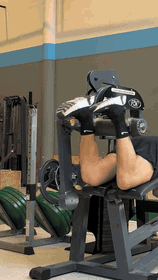
腿弯举（俯卧版本） · 12帧/秒 · 真人连续动作 · Your Move（免费视频授权） 膝轴对齐，髋不抬，慢慢伸回。
腘绳肌；屈膝力量。
本动作怎么安排 周二 · 下肢力量 A 3 × 10–12
周六 · 下肢力量 B 3 × 10–12
组间休息 · 1–2分钟起，以动作稳定为准
重量 / 难度 · 用热身逐级确认当天工作重量；按目标次数完成后，通常还应能以同样姿势再做约2–3次。
01 / 准备姿势 选择坐姿或俯卧机；膝关节对准机器转轴，滚垫在脚踝上方，小腿可舒适运动。
02 / 一次完整动作 躯干与髋部贴靠垫，屈膝带动滚垫。 到能维持骨盆稳定的位置停顿半秒。 控制伸膝返回，不让配重砸落，不强顶膝关节末端。 04 / 常见错误 → 调整 抬髋、塌腰 → 降重并调整压腿垫。
快速弹回 → 放慢回程，减少重量。
05 / 每组完成自检 膝关节与机器轴线对齐，滚垫不压在跟腱上。 弯起时髋部不抬、腰部不明显代偿。 伸回末端可以减速，配重不砸落。 06 / 难度调整与进步 做不稳时 · 先减重、调滚垫和靠垫；坐姿与俯卧版本分别记录设置，不直接比较公斤数。
稳定之后 · 先达到10–12次且髋部稳定，再增加最小配重。
个人应用 · 周二与周六均3×10–12；两天都训练腿后侧，疲劳时优先减少辅助组数。
↑ 返回动作目录 Dead Bug / 核心
死虫式 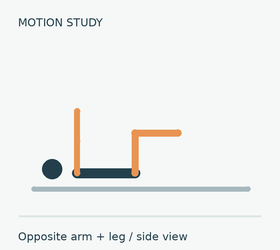
死虫式 · 12帧/秒 · 原创连续示意动画（简化关节轨迹，非真人录像） 肋骨收住，对侧伸展，腰不拱。
核心抗伸展与四肢协调。
本动作怎么安排 周二 · 下肢力量 A 3 × 10 / 侧
组间休息 · 60–90秒起，以恢复控制为准
重量 / 难度 · 先用较容易版本；一旦控制或呼吸明显丢失，就结束该组。
01 / 准备姿势 仰卧，髋膝约90°，手向天花板；腰背保持舒适且稳定的贴地关系。
02 / 一次完整动作 缓慢伸出一侧手臂与对侧腿，先用较小幅度。 只伸到腰背仍稳定的位置，腿不必贴地，呼气时收住肋骨。 回到起点，换边；每侧一次算该侧一次。 03 / 呼吸与核心 伸展时缓慢呼气，返回吸气，不屏气硬撑。
04 / 常见错误 → 调整 伸腿时腰拱起 → 缩短腿的伸展距离或先做脚跟点地。
动作太快 → 降速，每次伸展约2–3秒。
05 / 每组完成自检 伸手伸腿时肋骨没有明显翻起。 腰背与地面的稳定关系没有被伸展破坏。 左右交替仍能呼吸，回到起点后再换边。 06 / 难度调整与进步 做不稳时 · 缩短伸展距离，或先做脚跟点地；次数以腰背可稳定控制为上限。
稳定之后 · 先改善伸展范围与控制，再增加次数；不要一次同时增加范围、速度和次数。
个人应用 · 原计划3×10/侧；若难以维持控制，减少次数。
↑ 返回动作目录 Barbell Bench Press / 胸部
杠铃卧推 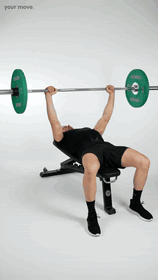
杠铃卧推 · 12帧/秒 · 真人连续动作 · Your Move（免费视频授权） 握牢杠，前臂稳，轻触再推。
胸肌、肱三头肌、三角肌前束。
本动作怎么安排 周四 · 上肢力量 B 4 × 4–6
组间休息 · 2–3分钟起，未恢复时可延长
重量 / 难度 · 用热身逐级确认当天工作重量；按目标次数完成后，通常还应能以同样姿势再做约2–3次。
01 / 准备姿势 安全杆或保护者到位；头、上背、臀部有支撑，脚踩地。拇指环握，杠落在掌根上方，手腕尽量与前臂对齐。
02 / 一次完整动作 取杠后先稳定，下降到中下胸附近，肘与躯干保持舒适角度。 前臂从正面看接近竖直，杠轻触或到稳定无痛深度，不弹胸。 向上并略向肩部方向推回，肩胛保持承托，臀部不离凳。 03 / 呼吸与核心 下降前吸气撑紧躯干，推过困难段后呼气。
04 / 常见错误 → 调整 手腕大幅后折 → 检查杠在掌根的位置并减重。
弹胸或臀离凳 → 降重，保持身体支撑。
05 / 每组完成自检 杠在掌根上方，手腕没有明显后折。 下放轻触或停在稳定深度，不弹胸。 推起时臀部留在凳上，左右杠端基本同步。 06 / 难度调整与进步 做不稳时 · 先减重并确认安全杆或保护者；手腕疼痛时停止本动作，再判断是否有无痛替代。
稳定之后 · 在相同触点和幅度下完成4–6次目标并保留余力后，再考虑最小重量增量。
个人应用 · 原计划4×4–6。既往手腕/拇指侧疼痛需要当次确认；疼痛时停止该动作，不保证换握法就安全。
↑ 返回动作目录 Neutral-grip Dumbbell Press / 胸部
中立握哑铃卧推 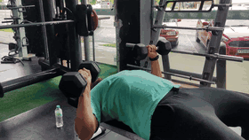
中立握哑铃卧推 · 12帧/秒 · 真人连续动作 · Goulart / wger · CC BY-SA 4.0 掌心相对，前臂稳定，平稳推起。
胸肌、三头肌；卧推的可选替代。
本动作怎么安排 周四 · 卧推可选替代 替代原卧推位置，不额外叠加；先用轻重量重新确认组次
组间休息 · 2–3分钟起，未恢复时可延长
重量 / 难度 · 先用轻哑铃验证握法、幅度和收尾；只有无痛且可控时才安排工作组，不直接套用杠铃卧推重量。
01 / 准备姿势 平凳上稳住头、背、臀，脚踩地；掌心相对，手腕与前臂对齐。
02 / 一次完整动作 屈肘下降，肘靠近躯干但不强夹紧，哑铃到胸侧舒适深度。 保持前臂稳定向上推，不撞哑铃、不耸肩。 控制返回；结束时先把哑铃稳放到腿上，再坐起。 04 / 常见错误 → 调整 认为中立握一定无痛 → 先用轻重量验证，痛则停止。
结束时直接甩落 → 用可控重量并安排安全收尾。
05 / 每组完成自检 掌心全程相对，没有边推边变成普通握法。 手腕在前臂上方，肘部不过度外张。 左右哑铃同步，结束时仍有能力安全坐起。 06 / 难度调整与进步 做不稳时 · 从轻重量熟悉版本；减小无痛下放幅度。如果仍疼痛，停止，而不是继续更换握法硬做。
稳定之后 · 独立记录本版本的重量与次数；不要直接沿用杠铃卧推重量或与其比较。
个人应用 · 作为卧推替代，不额外叠加。初次替代先用较轻重量熟悉，原4×4–6不应直接套用同重量。
↑ 返回动作目录 Seated Cable Row / 背部
坐姿划船 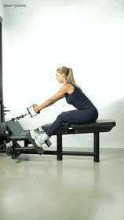
坐姿划船 · 12帧/秒 · 真人连续动作 · Your Move（免费视频授权） 躯干稳，肘向后，肩胛自然动。
背阔肌、上背、肘屈肌。
本动作怎么安排 周四 · 上肢力量 B 3 × 8–10
组间休息 · 1–2分钟起，以动作稳定为准
重量 / 难度 · 用热身逐级确认当天工作重量；按目标次数完成后，通常还应能以同样姿势再做约2–3次。
01 / 准备姿势 双脚固定，膝微屈，躯干直立；拉索高度合适，握把处于舒适位置。
02 / 一次完整动作 肘向后拉，把握把带向上腹附近；躯干不大幅后仰。 到肩部舒适位置停顿，避免肘过度向后。 缓慢放回，允许肩胛前伸，但腰背不塌。 04 / 常见错误 → 调整 躯干前后摇摆 → 减重，缩小借力。
全程夹死肩胛 → 允许受控前伸与后缩。
05 / 每组完成自检 拉动时躯干角度变化小，不反复前后甩。 回放可让肩胛自然前伸，但腰背不塌。 握把靠近上腹的过程中，手腕保持稳定。 06 / 难度调整与进步 做不稳时 · 减轻配重，先缩小躯干借力；调整握把和脚部位置。
稳定之后 · 在相同握把、座位和活动范围下先增加次数，再提高配重。
个人应用 · 原计划3×8–10；不把肩胛自然前伸误判为错误。
↑ 返回动作目录 Seated Dumbbell Shoulder Press / 肩部
坐姿哑铃肩推 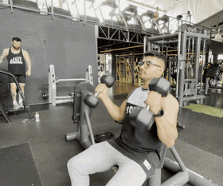
坐姿哑铃肩推 · 12帧/秒 · 真人连续动作 · Goulart / wger · CC BY-SA 4.0 肋骨收住，前臂竖直，向上推。
三角肌与肱三头肌。
本动作怎么安排 周四 · 上肢力量 B 3 × 8
组间休息 · 1–2分钟起，以动作稳定为准
重量 / 难度 · 用热身逐级确认当天工作重量；按目标次数完成后，通常还应能以同样姿势再做约2–3次。
01 / 准备姿势 靠背近直立，双脚踩稳；哑铃在肩侧，肘略在身体前方，手腕对齐前臂。
02 / 一次完整动作 向上推起，肩胛可自然上转，手臂不必强行贴耳。 接近伸直时保持肋骨不翻起，腰部不过度后仰。 控制下降到可稳定且无痛的位置。 04 / 常见错误 → 调整 靠塌腰顶重量 → 减重，调整靠背与核心张力。
锁死肩胛下沉 → 让肩胛随上举自然运动。
05 / 每组完成自检 背部有靠垫支撑，推起时肋骨没有明显翻起。 手腕在肘上方，左右哑铃轨迹基本同步。 肩胛随上举自然运动，不强行压肩。 06 / 难度调整与进步 做不稳时 · 减轻重量，调整靠背和无痛下放范围；无法稳定完成时结束该组。
稳定之后 · 先把每组8次做稳；不能靠增大腰部后仰完成新重量。
个人应用 · 原计划3×8。这里明确采用哑铃坐姿版本；如原训练使用杠铃，需按对应版本调整。
↑ 返回动作目录 Reverse Fly / 肩部
反向飞鸟 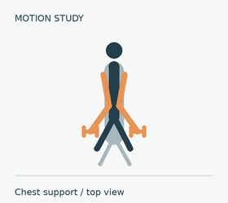
反向飞鸟 · 12帧/秒 · 原创连续示意动画（简化关节轨迹，非真人录像） 胸有支撑，肘向外，别甩。
三角肌后束及上背。
本动作怎么安排 周四 · 上肢力量 B 3 × 12–15
组间休息 · 1–2分钟起，以动作稳定为准
重量 / 难度 · 用热身逐级确认当天工作重量；按目标次数完成后，通常还应能以同样姿势再做约2–3次。
01 / 准备姿势 本手册采用胸托哑铃版本；胸贴斜凳，肘微屈，双脚踩稳。
02 / 一次完整动作 手臂向两侧打开，保持肘角基本不变。 抬到上臂大致与躯干齐平或舒适高度，不过度夹背。 控制回程，头颈与躯干自然对齐。 04 / 常见错误 → 调整 变成屈肘划船 → 降重并保持肘角。
抬头甩动 → 保持胸贴垫、颈部中立。
05 / 每组完成自检 胸贴斜凳，头颈与躯干自然对齐。 肘角大致固定，打开动作不变成屈肘划船。 回程能减速，哑铃不自由甩落。 06 / 难度调整与进步 做不稳时 · 使用更轻哑铃；保持胸部支撑，缩小到能控制的活动范围。
稳定之后 · 先稳定完成12–15次；后束动作通常不适合用大幅摆动追求更重。
个人应用 · 原计划3×12–15；器械版本可按相同控制原则执行。
↑ 返回动作目录 Rope Triceps Pushdown / 手臂
绳索下压 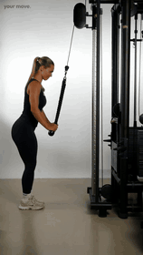
绳索下压 · 12帧/秒 · 真人连续动作 · Your Move（免费素材授权） 上臂稳，只伸肘，慢回程。
肱三头肌。
本动作怎么安排 周四 · 上肢力量 B 2 × 10–12
组间休息 · 1–2分钟起，以动作稳定为准
重量 / 难度 · 用热身逐级确认当天工作重量；按目标次数完成后，通常还应能以同样姿势再做约2–3次。
01 / 准备姿势 拉索调高，身体站稳并略前倾；上臂在身体侧面，肩部自然。
02 / 一次完整动作 伸肘向下压，绳索末端可自然分开，不靠压肩与躯干下沉。 手肘接近伸直即可，不突然撞到末端。 控制回程到舒适屈肘角度，上臂不明显前后摆。 04 / 常见错误 → 调整 身体压绳 → 减重，保持上臂稳定。
手腕弯折 → 握持自然，前臂与手腕对齐。
05 / 每组完成自检 上臂大致固定在身体两侧，不前后甩。 下压主要来自伸肘，身体不跟着下沉。 回程能控制，手腕没有折起。 06 / 难度调整与进步 做不稳时 · 减少配重，站在绳索不碰躯干的位置；先确认肩部和上臂可以稳定。
稳定之后 · 先做稳10–12次，再增加最小配重；绳尾分开幅度不作为加重标准。
个人应用 · 原计划2×10–12；绳索分开幅度不必刻意夸大。
↑ 返回动作目录 Conventional Deadlift / 腿臀
传统硬拉 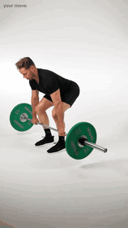
传统硬拉 · 12帧/秒 · 真人连续动作 · Your Move（免费视频授权） 杠在中足，先绷紧，再推地。
臀肌、腿部与背部稳定；整体拉力。
本动作怎么安排 周六 · 下肢力量 B 3 × 4–5
组间休息 · 2–3分钟起，未恢复时可延长
重量 / 难度 · 用热身逐级确认当天工作重量；按目标次数完成后，通常还应能以同样姿势再做约2–3次。
01 / 准备姿势 杠在中足上方，脚约髋宽，手在腿外环握。屈髋屈膝抓杠，小腿接近杠，髋高度按身体比例调整。
02 / 一次完整动作 吸气撑紧腹部，收紧背部与杠的松弛量，不突然猛拽。 推地站起，杠贴近腿，髋与肩协调上升。 顶部髋膝伸直即可，不后仰；髋先向后送，杠过膝后再屈膝放回。 03 / 呼吸与核心 每次起拉前重新建立腹压，落地后重置，不连续憋气做多次。
04 / 常见错误 → 调整 杠离身、髋抢先抬 → 降重，重置起始位置。
顶部后仰 → 站直即停，避免用腰补锁定。
05 / 每组完成自检 起拉前已绷紧，杠没有被突然猛拽。 杠贴近腿，起身时肩与髋协调移动。 每次落地可重新设置，不靠反弹连续拉起。 06 / 难度调整与进步 做不稳时 · 减少重量，逐次重置；如果地面起始位置无法稳定控制，先用轻重量并寻求现场技术指导。
稳定之后 · 保持每次起拉设置一致；完成目标且动作稳定后再小幅加重，不以一次勉强拉起为依据。
个人应用 · 原计划3×4–5；本手册指传统硬拉，其他版本不要混用起始姿势。
↑ 返回动作目录 Hack Squat / 腿臀
哈克深蹲 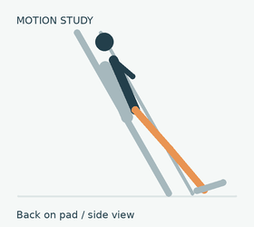
哈克深蹲 · 12帧/秒 · 原创连续示意动画（简化关节轨迹，非真人录像） 背贴垫，脚踩稳，控深度。
股四头肌与臀肌。
本动作怎么安排 周六 · 下肢力量 B 3 × 8
组间休息 · 1–2分钟起，以动作稳定为准
重量 / 难度 · 用热身逐级确认当天工作重量；按目标次数完成后，通常还应能以同样姿势再做约2–3次。
01 / 准备姿势 肩背贴靠垫，双脚全掌在踏板上，调好站位并确认安全挡位。
02 / 一次完整动作 解锁后缓慢屈膝屈髋，膝随脚尖方向移动。 下到足跟稳定、骨盆与背仍有支撑的位置。 推地起身，不借底部反弹，末端不超伸膝。 03 / 呼吸与核心 下降吸气，起身呼气并保持腹部张力。
04 / 常见错误 → 调整 追深度导致骨盆离垫 → 缩小幅度或调整脚位。
末端猛锁膝 → 平稳伸直，不冲撞。
05 / 每组完成自检 肩背与骨盆有靠垫支撑。 足跟保持踏板接触，膝盖跟随脚尖。 底部不反弹，顶部不突然猛锁膝。 06 / 难度调整与进步 做不稳时 · 减轻配重并调整脚位；确认安全挡位，深度以背部支撑和全脚掌稳定为限。
稳定之后 · 记录具体机器和脚位，在相同设置下比较次数与重量。
个人应用 · 原计划3×8；不同机器角度不同，不套用固定脚位。
↑ 返回动作目录 Hip Thrust / 腿臀
臀推 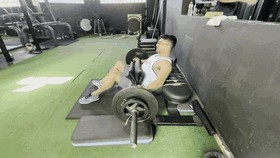
臀推 · 12帧/秒 · 真人连续动作 · Goulart / wger · CC BY-SA 4.0 肋骨收住，髋伸直，别折腰。
臀大肌；髋伸展力量。
本动作怎么安排 周六 · 下肢力量 B 3 × 8–10
组间休息 · 1–2分钟起，以动作稳定为准
重量 / 难度 · 用热身逐级确认当天工作重量；按目标次数完成后，通常还应能以同样姿势再做约2–3次。
01 / 准备姿势 上背承托在稳定凳边，杠垫放在髋部，双脚踩稳；顶部小腿大致竖直，可按感受调整脚位。
02 / 一次完整动作 收住肋骨，脚推地把髋抬起。 顶部躯干与大腿大致连线，轻收骨盆，臀部收紧半秒。 缓慢下放到可控制的位置，上背不滑落。 04 / 常见错误 → 调整 顶部抬胸塌腰 → 减重，收肋骨并缩小高度。
脚位导致仅腿后侧抽紧 → 调整脚距，不以抽筋作为有效刺激。
05 / 每组完成自检 上背留在稳定凳边，没有滑落。 顶部来自伸髋，肋骨不翻起、腰不折。 双脚保持支撑，左右骨盆不明显偏斜。 06 / 难度调整与进步 做不稳时 · 先用徒手臀桥或轻重量臀推熟悉伸髋；再调整脚距和凳高。
稳定之后 · 先把顶部控制和8–10次做稳，再小幅加重；不靠抬胸后仰增加高度。
个人应用 · 原计划3×8–10；凳子必须稳定，髋部用足够厚的护垫。
↑ 返回动作目录 Hanging Leg Raise / 核心
悬垂举腿 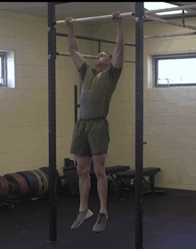
悬垂举腿（屈膝版本） · 12帧/秒 · 真人连续动作 · Matthew Holfinger / DVIDS（公有领域） 先稳悬垂，再卷骨盆，不摆腿。
腹肌与髋屈肌；控制骨盆。
本动作怎么安排 周六 · 下肢力量 B 3 × 10–12
组间休息 · 60–90秒起，以恢复控制为准
重量 / 难度 · 先用较容易版本；一旦控制或呼吸明显丢失，就结束该组。
01 / 准备姿势 牢固握杆，肩部在舒适受控悬垂位置；先停止身体摆动。
02 / 一次完整动作 先用屈膝版本，呼气时把膝向胸部带，同时轻轻向后卷骨盆。 只举到能控制腰背与摆动的高度，不追求脚碰杆。 慢慢放下，停稳后再做下一次。 04 / 常见错误 → 调整 只甩腿不控制骨盆 → 改屈膝、减小幅度。
握力或肩部先不适 → 改仰卧反向卷腹或死虫式。
05 / 每组完成自检 开始每次重复前，身体已基本停稳。 膝向上带的同时能轻卷骨盆，不只甩腿。 下降可以减速，握力和肩部仍有控制。 06 / 难度调整与进步 做不稳时 · 优先屈膝或缩小范围；悬垂无法稳定时，可改死虫式练习核心控制。
稳定之后 · 先做稳屈膝版本，再逐渐增加伸腿程度；直腿是更高难度，不是必须完成的标准。
个人应用 · 原计划3×10–12；直腿更难，不必强求。次数以能保持控制为上限。
↑ 返回动作目录 Forearm Plank / 核心
平板支撑 平板支撑 · 静态保持姿势示意 肋骨收住，臀收紧，持续呼吸。
核心抗伸展；补充动作。
本动作怎么安排 补充查阅 20–40秒的可控保持；未加入四日计划
组间休息 · 60–90秒起，以恢复控制为准
重量 / 难度 · 先用较容易版本；一旦控制或呼吸明显丢失，就结束该组。
01 / 准备姿势 前臂撑地，肘在肩下，脚向后伸，头到脚大致连线。
02 / 一次完整动作 轻收骨盆与臀部，腹部保持张力。 保持肩部有支撑，头颈自然，不抬头。 能够稳定呼吸且姿势不变时保持，塌腰前结束。 04 / 常见错误 → 调整 靠塌腰坚持 → 缩短时长或改膝支撑。
臀抬得过高 → 调整到躯干直线，减少难度。
05 / 每组完成自检 头、躯干与腿大致连线，不塌腰。 前臂稳定撑地，臀部不过度抬高。 保持期间能够持续呼吸，姿势不随时间崩溃。 06 / 难度调整与进步 做不稳时 · 缩短保持时间或改膝支撑；在姿势开始改变前结束。
稳定之后 · 先增加稳定保持时间，再考虑更难版本；不为了计时硬撑。
个人应用 · 补充查阅，不自动加入现有四日计划。建议先以20–40秒的可控时长练习。
↑ 返回动作目录 Hammer Curl / 手臂
锤式弯举 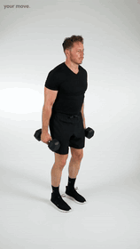
锤式弯举 · 12帧/秒 · 真人连续动作 · Your Move（免费素材授权） 掌心相对，肘位稳定，回程慢放。
肱肌、肱桡肌与肱二头肌；提供中立握肘屈版本。
本动作怎么安排 哑铃弯举的可选替代 · 尚未编入当前四日计划；选择后替换或单独安排，不自动加组
组间休息 · 1–2分钟起，以呼吸与动作控制恢复为准
重量 / 难度 · 先用轻重量确认动作版本。若选入计划，再确定工作组与目标次数；不直接套用其他版本重量。
器械 · 哑铃
01 / 准备姿势 站稳，膝微屈，哑铃放身体两侧；掌心相对，手腕和前臂保持对齐。
02 / 一次完整动作 上臂大致留在身体两侧，同时屈肘举起哑铃。 到达可控位置即可，不用肩部前送或腰部后仰补高度。 受控放回，手臂逐渐伸直，掌心始终相对。 04 / 常见错误 → 调整 腰部后仰 → 减重，保持躯干稳定。
手腕折起 → 保持中立位置，换轻重量。
05 / 每组完成自检 掌心始终相对。 最后一次仍不摆腰。 两侧下放均能控制。 06 / 难度调整与进步 做不稳时 · 减轻哑铃，必要时靠墙限制躯干摆动。
稳定之后 · 先稳定次数和幅度，再考虑最小哑铃增量。
可作为哑铃弯举的备选，不额外叠加；中立握不等于能绕过疼痛。
↑ 返回动作目录 Single-arm Dumbbell Row — Thigh-supported / 背部
单臂哑铃划船（手撑大腿） 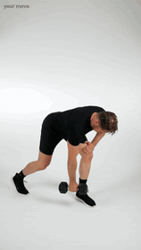
单臂哑铃划船（手撑大腿） · 12帧/秒 · 真人连续动作 · Your Move（免费素材授权） 撑稳躯干，肘向后拉，回程不转腰。
背部水平拉力与单侧控制。
本动作怎么安排 水平拉力的另一版本（需单独确认） · 尚未编入当前四日计划；选择后替换或单独安排，不自动加组
组间休息 · 1–2分钟起，以呼吸与动作控制恢复为准
重量 / 难度 · 先用轻重量确认动作版本。若选入计划，再确定工作组与目标次数；不直接套用其他版本重量。
器械 · 哑铃
01 / 准备姿势 前后错步并稍加宽站距，屈髋前倾，空手撑在前侧大腿上；另一手握哑铃自然下垂。
02 / 一次完整动作 先稳定躯干与骨盆，哑铃在肩下方悬垂。 将肘向后带，哑铃靠近身体侧面，不靠大幅转体提起。 受控放回手臂下垂位置；完成一侧后重新站稳再换侧。 03 / 呼吸与核心 拉起呼气，放回吸气；保持躯干张力。
04 / 常见错误 → 调整 转腰甩起 → 减重，保持肩髋朝向稳定。
抬头顶腰 → 颈部随躯干保持自然位置。
05 / 每组完成自检 躯干角度基本稳定。 骨盆不随拉动明显旋转。 两侧使用相同可控范围。 06 / 难度调整与进步 做不稳时 · 用更轻哑铃、较小但受控的幅度；不能稳定躯干时暂不选本版本。
稳定之后 · 先让两侧完成同样质量与次数，再提高重量。
本示范是手撑大腿版本，不是胸托划船；腰背控制不足时不能把它当作等效低负担替代。
↑ 返回动作目录 Dumbbell Goblet Squat / 腿臀
哑铃高脚杯深蹲 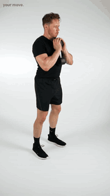
哑铃高脚杯深蹲 · 12帧/秒 · 真人连续动作 · Your Move（免费素材授权） 哑铃靠胸，脚底踩稳，髋膝一起下降。
蹲类基础练习与前置负重控制。
本动作怎么安排 蹲类基础与轻负重备选 · 尚未编入当前四日计划；选择后替换或单独安排，不自动加组
组间休息 · 1–2分钟起，以呼吸与动作控制恢复为准
重量 / 难度 · 先用轻重量确认动作版本。若选入计划，再确定工作组与目标次数；不直接套用其他版本重量。
器械 · 哑铃
01 / 准备姿势 双脚选舒适站距，脚尖稍向外；双手托住竖直哑铃上端，哑铃靠近胸前，先收紧躯干。
02 / 一次完整动作 髋膝协调弯曲下降，膝盖大致跟随脚尖方向。 到脚底稳定、腰背能控制的深度，不照搬示范者的最低点。 全脚掌推地站起，哑铃仍靠胸，不用后仰完成顶部。 03 / 呼吸与核心 下降前吸气并稳定躯干，站起时适度呼气，重复间重新准备。
04 / 常见错误 → 调整 足跟抬起 → 减少深度，重新调整站距。
哑铃远离胸部 → 减重，保持靠近身体。
05 / 每组完成自检 全脚掌有支撑。 膝盖没有突然内扣。 起身时重量没有向前坠。 06 / 难度调整与进步 做不稳时 · 先用徒手深蹲或更轻哑铃，缩小到能稳定控制的深度。
稳定之后 · 先稳定深度与次数，再使用小幅重量增量。
可作为蹲类技术练习或器械不足时的备选；不是按杠铃深蹲公斤数直接换算。
↑ 返回动作目录 Seated Machine Chest Press / 胸部
坐姿器械推胸 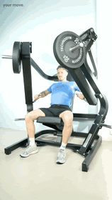
坐姿器械推胸 · 12帧/秒 · 真人连续动作 · Your Move（免费素材授权） 背贴靠垫，手腕对齐，推回都受控。
胸部推力与肱三头肌辅助；提供有靠垫的推举版本。
本动作怎么安排 胸部推举备选（需独立选重） · 尚未编入当前四日计划；选择后替换或单独安排，不自动加组
组间休息 · 1–2分钟起，以呼吸与动作控制恢复为准
重量 / 难度 · 先用轻重量确认动作版本。若选入计划，再确定工作组与目标次数；不直接套用其他版本重量。
器械 · 推胸器械
01 / 准备姿势 调座高，使握把在胸部附近且肩部舒适；背部贴垫，双脚踩稳，先用轻重量确认轨迹和收尾。
02 / 一次完整动作 从舒适的起始位置向前推，保持手腕与前臂对齐。 推到肘部接近伸直的可控位置，不猛烈撞击末端。 缓慢回到肩部舒适的下放位置，配重不砸落。 03 / 呼吸与核心 推起呼气，回程吸气；不要持续憋气赶次数。
04 / 常见错误 → 调整 背部离垫借力 → 减重并固定坐姿。
下放过深顶肩 → 调座高、减小无痛范围。
05 / 每组完成自检 背部基本留在靠垫上。 手腕没有明显后折。 回程不突然失控。 06 / 难度调整与进步 做不稳时 · 减轻重量，调整座高和无痛范围；仍不适时停止。
稳定之后 · 记录具体机器与座高，在相同设置下比较表现。
可作为胸部推举备选；具体机器轨迹不同，不能假定一定比卧推无痛。
↑ 返回动作目录 Seated Leg Extension / 腿臀
坐姿腿屈伸 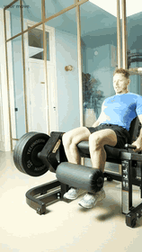
坐姿腿屈伸 · 12帧/秒 · 真人连续动作 · Your Move（免费素材授权） 膝轴对齐，伸膝不甩，回程慢放。
股四头肌孤立训练；不是深蹲或腿举的等效替代。
本动作怎么安排 股四头肌辅助备选 · 尚未编入当前四日计划；选择后替换或单独安排，不自动加组
组间休息 · 1–2分钟起，以呼吸与动作控制恢复为准
重量 / 难度 · 先用轻重量确认动作版本。若选入计划，再确定工作组与目标次数；不直接套用其他版本重量。
器械 · 腿屈伸器械
01 / 准备姿势 调整靠背与座位，使膝关节大致对准机器轴；滚垫放在小腿下端、避开直接压踝的位置，坐稳并握好把手。
02 / 一次完整动作 保持大腿与骨盆稳定，伸膝把滚垫举起。 到可控且舒适的范围即可，不猛踢到关节末端。 受控弯膝放回，配重不撞落，下一次重新控制。 04 / 常见错误 → 调整 甩腿踢起 → 减重，不借加速度。
臀部抬起 → 调整座位、滚垫并降低重量。
05 / 每组完成自检 膝与机器轴基本对齐。 骨盆没有离开座垫。 末端和回程均能减速。 06 / 难度调整与进步 做不稳时 · 先减重、确认机器设置，在无痛且受控的范围内练习。
稳定之后 · 先增加标准次数，再提高最小配重；机器之间公斤数不直接比较。
只作为腿部辅助备选，不用它直接替代整套蹲类动作；膝不适时停止相关动作。
↑ 返回动作目录 Cable Rope Face Pull / 肩部
绳索面拉 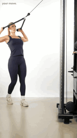
绳索面拉 · 12帧/秒 · 真人连续动作 · Your Move（免费素材授权） 绳拉向脸侧，躯干稳定，手腕自然。
上背与肩后侧协调训练；与胸托反向飞鸟不是同一个动作。
本动作怎么安排 肩后侧与上背备选 · 尚未编入当前四日计划；选择后替换或单独安排，不自动加组
组间休息 · 1–2分钟起，以呼吸与动作控制恢复为准
重量 / 难度 · 先用轻重量确认动作版本。若选入计划，再确定工作组与目标次数；不直接套用其他版本重量。
器械 · 绳索＋绳头
01 / 准备姿势 滑轮设在脸部附近或略高的位置，握绳退后站稳；双臂伸出，保持躯干稳定并用轻配重确认绳索不会碰脸。
02 / 一次完整动作 将绳索向脸部两侧拉，手与前臂自然分开，肘部在舒适高度向外后方移动。 在肩部舒适、受控的位置停止，不强行把手拉到头后。 慢慢伸回手臂，身体不跟随配重前后晃动。 04 / 常见错误 → 调整 后仰拉动全身 → 减重，重新站稳。
强扭手腕或强拉到头后 → 使用自然握法与舒适范围。
05 / 每组完成自检 躯干角度基本不变。 肩部没有出现夹痛。 回程绳索与配重均可控制。 06 / 难度调整与进步 做不稳时 · 使用更轻配重，缩小到舒适范围；不能稳定执行时先不选。
稳定之后 · 先提高受控次数，再考虑最小配重；不追求用大重量后仰拉起。
作为肩后侧与上背的另一个备选，不用其动图冒充胸托反向飞鸟。
↑ 返回动作目录 恢复与复盘 周三19:30–20:10：轻松步行或约30分钟能正常交谈的低强度有氧。8000–10000步是全天参考，不是40分钟内必须走完的目标。
周日20:00–20:30：记录完成情况、主要动作重量与组次、RPE、睡眠、疲劳和疼痛情况，再据此调整下一周计划。
先做5–10分钟轻活动，主要动作逐级热身；主要动作组间约休息2–3分钟，辅助动作约1–2分钟。明显疼痛时停止相关动作。